Local-First AI Tools
AI-Assisted Code Development
Cutting Edge Databases
Top APIs and Public Data Sources
AI Art Generation: Images, 3D, and Video
Speech-to-Text & Text-to-Speech
Networking, VPN, & Infrastructure Security
Virtual Machine and Browser Automation and Scrapers
AI in Video Games & Virtual Beings
Home Automation & Security